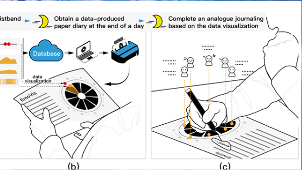
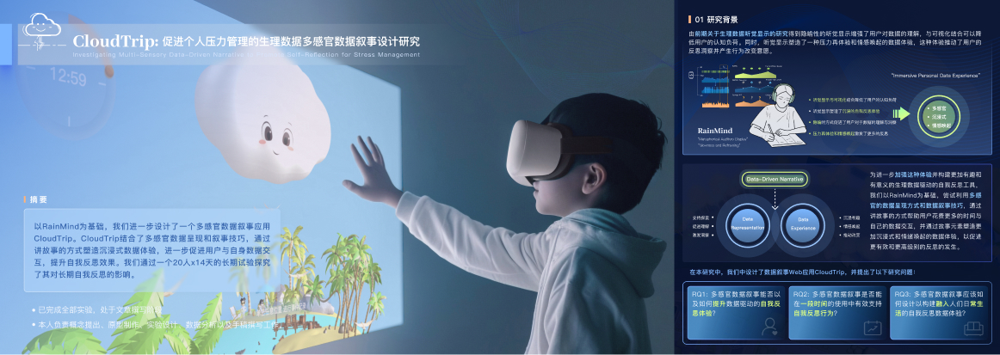
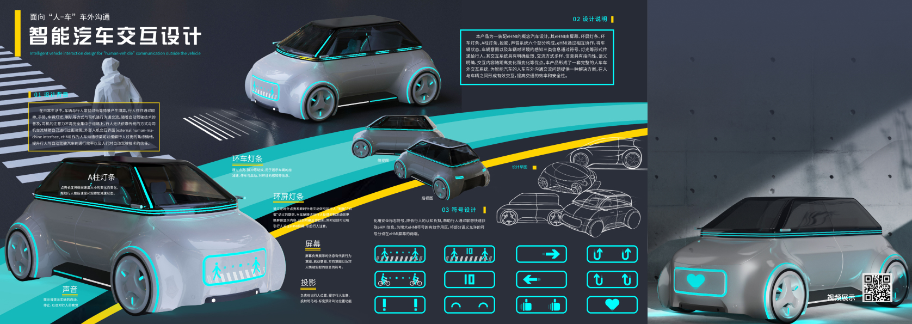
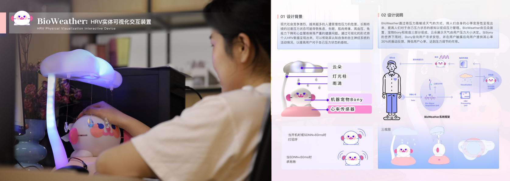

个人介绍

教育背景
2025-至今
2022-2025
2018-2022
北京理工大学设计学
北京理工大学设计学
中国海洋大学工业设计
博士研究生
硕士
学士
荣誉获奖
论文发表

- Yan, R., Ren, X., Wang, S., Bai, X., & Zhang, X. (2024). RainMind: Investigating Dynamic Natural Soundscape of Physiological Data to Promote Self-Reflection for Stress Management. International Journal of Human—Computer Interaction, 1–18. https://doi.org/10.1080/10447318.2024.2364468
- Ren, X.#*, Zhang, X.#*, Zou, R., Yan, R., & Yu, B*. (2024). EmoVis: exploring data–enabled analogue journaling to promote self–reflection for mental wellness among college students. Behaviour & Information Technology, 1–23. https://doi.org/10.1080/0144929X.2024.2349182
- Han, D., Sun, X., Zhang, X., Yan, R., & Ren, X. (2023). Exploring Healthful Spatial Interface with Bodystorming: A Case Study from the Vertical Workspace Workshop. In Proceedings of the 2023 ACM Symposium on Spatial User Interaction (pp. 1–6). https://doi.org/10.1145/3607822.3616416
- Guo, X., Qiao, J., Yan, R., Wang, Z., & Chu, J. (2021). The Smaller the Better? A Study on Acceptance of 3D Display of Exhibits of Museum’s Mobile Media. In the 23rd HCI International Conference, HCII 2021, Virtual Event, July 24–29, 2021, Proceedings, Part III 23 (pp. 303–324). https://doi.org/10.1007/978–3–030–78468–3_21
参与项目
International Journal of Human—Computer Interaction, 2024
RainMind: 促进个人情绪管理的健康数据自然声景设计
Go To The Publication Site为了进一步促进用户与数据之间的交互，锻造专有链，更有价值的自我反思体验，本文介绍了RainMind：一个模拟音景生物反馈方法的自然声音声景Web应用，旨在通过个性化的音景，RainMind旨在帮助用户进行压力水平的评估。本论文探讨RainMind的声音设计，并一步探索生理数据驱动的动态自适应系统在促进心理健康反思中的作用。

本文提出了一种生理数据可视化驱动的自我反思日记方法（以下简称：DEAJ），通过纸质载体将个人情绪事件及心电、皮电数据的可视化映射结合，从而促进心理健康。经过数次设计迭代，该工具实现了能够能基于每日数据生成可视化日志，支持通过描摹和结构化写作的自我反思方法，帮助大学生管理日常情绪压力。
设计作品



闫冉
Ran Yan
数据体验 | 心理健康 | 特殊教育
yan.id@qq.com